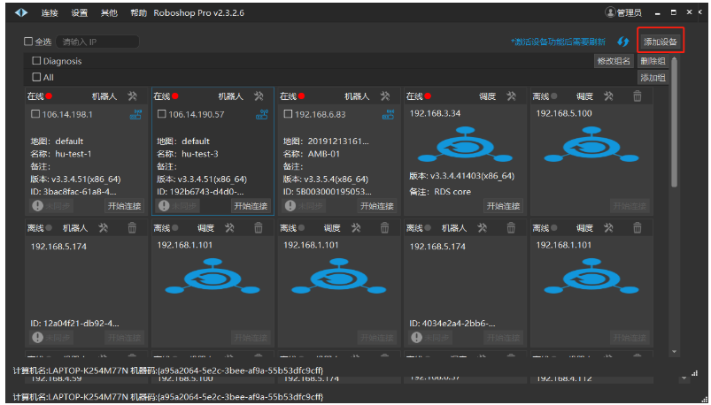

header-v2
SEER Robotics
Last updated: Apr 10
Windows
Windows
Modified April 10
需要注意的是：
对于 windows 平台，目前支持如下操作系统：
•
windows server 2016
•
windows server 2019
•
windows server 2022
对于 windows 10 等非服务器系统，RDS 可以运行但不保证其运行稳定性。
1 安装
将最新的 RDSInstallers 安装包，如 Base_RDSInstaller_4.3.0.0.exe（for Windows）安装在目标主机上，直接安装即可（建议安装在根目录下，同时保证计算机名称为英文）。

2 更新
用户可以通过 Roboshop 来更新 Core 和 RDS 。（需在 Robod 软件运行时）。
1）在目标服务器上，运行 RDS（安装完成后点击桌面上的 RDS 蓝色图标，双击启动）。在同一局域网的 PC 上打开 Roboshop 软件，点击界面右上角的【添加设备】：
